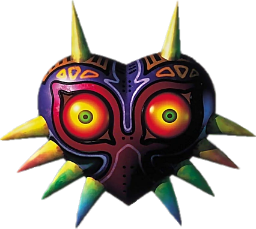

Slenderman:
coso era un chico que tenía una vida miserable: sus
padres lo despreciaban y
en la escuela sufría acosos, así que un día decidió terminar con su vida,
tomó una cuerda y se dirigió a un desolado callejon. Sujetó la cuerda a un
arbol y se subió a una silla para colgarse, pero justo llegó un anciano y
le rogo que no lo haga; él le respondió que no se inmiscuya , pero este
le agarro la muñeca y sin perder tiempo le inyectó algo en el brazo. coso se
desmayó. Cuando despertó se vio atado en una camilla, y pudo ver al anciano
ahora con una bata de laboratorio del otro lado de un vidrio blindado.
Quiso reaccionar pero unas nuevas agujas lo estaban inyectando, mientras
observaba la cara de satisfacción del anciano. Pero de un momento a otro
su gesto cambió, comenzó a mirar frenéticamente una pantalla y presionar botones,
y coso se
dio cuenta que algo se salió de control. Sintió un dolor paralizante
en todo el cuerpo y mietras oía explosiones y gritos, perdió el conocimiento.
Al despertar vio el laboratorio destruido, escuchó pasos y pidió ayuda, aunque
no logró oir su voz; un policía se acercó pero al verlo, salió corriendo aterrado;
sin embargo no llego a huir
ya que unos tentaculos le atravezaron el corazón.
coso estaba muy asustado.
se giró en busca de ayuda y pudo ver al anciano, pero a este también lo alcanzaron los
tentáculos, lo arrojaron contra la pared y murió al instante. coso se volteó para seguir
buscando ayuda pero se topo con su imagen en un espejo, y eso lo horrarizó, no tenia ojos pero
podia ver, no tenia orejas pero podia oir, su rostro era como un lienzo blanco y su cuerpo era
muy alto y delgado ahora, ademas los tentaculos provenían de su espalda.
Como no logró matarse, vive en lo profubndo del bosque, se lo ha visto con su característico
traje negro y ya no quiere morir, sino que alguien lo acompañe .
Ben Drowned
Esta historia es conocida gracias a John, amigo de Ben, que después de años
de silencio, decidió hablar.
Se conocieron de niños y aunque Ben era un niño tímido, la pasión de ambos por
los videojuegos los unió,
principalmente el de la Leyenda de Zelda, y se hicieron muy buenos amigos.
Ben era pequeño y débil y
en la escuela habia tres chicos que siempre encontraban motivos para meterse con el.
Además no estaba bien en su casa, su padre habia muerto hacía poco en
un accidente de auto, y
recuerda con tristeza que lo último de lo que hablaron fue de los matones del colegio,
a lo que el padre
respondió que iban a ir a hablar y dijo "Seguro que esto tiene un final
maravilloso, ¿no es así?"; esas fueron sus últimas
palabras.
Pero luego tuvo un momento de felicidad y se lo contó a John, orgulloso le mostró que
logró comprarse "Majora´s
mask", el último juego de Zelda; su amigo se alegró de
verlo feliz y acordaron
jugarlo juntos. Tras ese día , Ben se la pasaba hablando del juego,
diciendo que quería ser como Link, valiente,
y enfrentrarse a sus matones, a John esos comentarios por alguna
razon lo ponian nervioso y no sabía que decir.
Un día en la escuela le desapareció en juego y fueron a hablar con la directora,
este estaba seguro
que habia sido Matt, el chico que siempre lo molestaba;
fue así que encontraron el juego en su mochila y la
directora lo mandó a direción, pero Ben seguía asustado, ya
que seguro a la salida le pegarían, de eso
estaba acostumbrado, pero le volverían a sacar el juego,
así que le pidió a su amigo que se lo guarde, y pase
por su casa a la tarde para dejarselo.
John fue a lo de Ben y esperó largo rato para que lo atendieran, se extrañó
hasta que
escuchó movimiento y risas
en el lago frente a la casa, quebaba en las afueras y no solía haber actividad, pero escuchó el
llanto de Ben y
austado, fue corriendo para allá. Y entonces lo vio: Matt, con otros dos tenían a Ben
tirado en el piso, y gritó "así que yo te robé tu juego eh? tranquilo, no lo vas a ver más, no vas a
ver nada
nunca más!" y cogiendo una rama, se la ensartó en un ojo. John no pudo avanzar más, estaba
paralizado del
miedo. Luego se la clavaba en el otro ojo, y no pudo evitar vomitar.
A pesar de la distancia oyó decir a
ben con voz entrecortada "no debiste hacer eso".
Matt agarró a Ben del cuello y sin dudarlo, le hundió la cabeza en el lago;
John veía sangre y vida escapar del
cuerpo de su amigo, pero no podía moverse. Los otros dos matones
también se asustaron e intentaron frenarlo,
pero los sacó a patadas, por lo que salieron corriendo sin mirar atrás. Seguía riendo e
insultando a Ben, hasta que advirtió que podrían verlo, y cojmo ya no se resistía, huyó.
Cuando John logró moverse, temblando. se acercó a su amigo y lo abrazó, sujetando con fuerza el
videojuego que no llegó a entregar. La policía llegó pero él solo pensaba en que mataron a su amigo
y solo se
quedó mirando.
conservó el videojuego como un juramento, pero este empezó a desaparecer misteriosamente
y cada vez que esto pasaba, en la tele anunciaban la muerte de un matón, primero los de su escuela y
luego de
otras, pero todos de la misma forma:
se les salían los ojos de las cuencas mientras jugaban "Majora´s Mask". Después de un tiempo, el
videojuego no
regresó a sus manos.
Años más tarde le prestaron el juego pero ya no era divertido,
uno de los diálogos decía “Te has topado
con un terrible destino, ¿verdad?”, y John no pudo evitar
recordar a Ben y la charla con su papá, pero entonces
le salió un cuadro que no le apareció a otros jugadores,
mientras Link se quemaba, el cual decía “Aunque no me
hubieras ayudado, no te guardo rencor, amigo”. Detuvo
el juego y no volvió a acercarse más a otro de La
Leyenda de Zelda. La culpa lo acompañaría de por vida.
